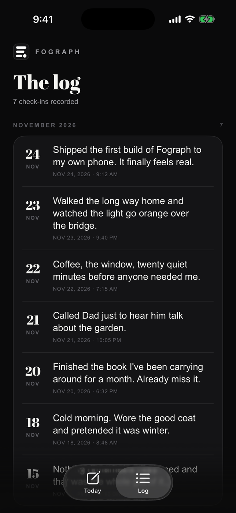

The habit
One sentence, on purpose
A 140-character cap keeps the habit small enough to keep. No blank page, no prompt to ignore — just today, in one line.
iPhone & iPad · Free
Write one line about today. Fograph stamps it with the date and time and keeps it in a log you can read back month by month.
Free · No account · Nothing leaves your device


How it works
The habit
A 140-character cap keeps the habit small enough to keep. No blank page, no prompt to ignore — just today, in one line.
The nudge
One reminder a day, scheduled on your device. Write your sentence before seven and it skips itself, so you're never nagged about something you've done.
The record
Every sentence is grouped by month and stamped with the year, month, day and time you wrote it. Scroll back a week or a year.
The long view
Add your birthday in Settings and Fograph counts the days, weeks and months you've lived, charted year by year against the life you expect.
No account. No cloud. No feeds, no streaks, no likes.
Entries live on your device. Nothing to sign up for, nothing to sync, nothing to lose track of.Available now
Open it once a day, write one line, close it. That's the whole app.